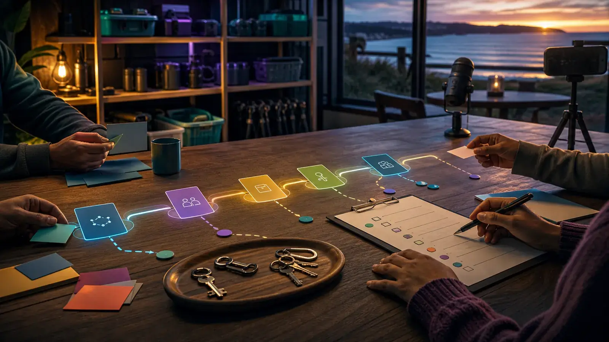

Public introduction
A plain page says what the work is, who it is for, what it is not, and which public repo or page holds the evidence.
Trust before shared assets
Some people will start with one small useful task. Some groups already know each other and can move quickly. The point is to keep consent, care and choice visible while the community discovers its own pace.

The spectrum
Trust is not one fixed staircase. It can start with public information, low-risk help, shared planning, a room, a media task, a grant draft, an asset register or a business need. People can pause, repeat, skip ahead where trust already exists, or move rapid fire when the idea lands.
A plain page says what the work is, who it is for, what it is not, and which public repo or page holds the evidence.
People try a small task together: a form, a grant profile, a short video, an event note, a repair list or a business profile.
The group names what can be public, what stays private, and what needs consent or cultural review.
A task becomes a prompt, builder, checklist or training clip that someone else can learn.
Equipment, rooms, contacts and files move best with clear care, a check-out trail and a person responsible for return.
Membership, service agreements, labour hire, training partnerships and larger grants can come into view as trust and demand become real.
What people can do now
These are possible starting points for residents, businesses, clubs and organisers. Someone might use one, combine a few, or bring a better path from real life.
A profile can gather practical skills, interests, care roles, local offers and the level of public visibility that feels comfortable.
AuraPrivate context an AI helper can reuseAn Aura note might hold deeper personal or project context: aims, limits, preferences, rhythms, sensitivities and ways of working. Most of that can stay private unless someone chooses otherwise.
BusinessA public business sketchA business profile might name what the business does, what support would help, what it can offer, and where a public reader can learn more.
ClubAn event or shared-asset noteA club note might include, for example, screens, mics, chairs, vehicles, cameras, volunteers, care roles, storage, access or safety needs.
MediaOne clear local storyAn interview pathway can help shape a consent-aware clip about a local need, lesson, offer, invitation or win in ordinary language.
GrantEvidence from work already happeningA grant-readiness note might collect dates, attendance, photos, public outputs, lessons, partners, costs or next needs.
LedgerCareful public thanksThe Community Ledger can acknowledge a contribution when visibility is welcome, wording is accurate, and private help can stay private.
Asset sharing
A microphone, projector, room, vehicle, camera or login can help a lot of people. It can also cause conflict if there is no clear permission, booking, repair, storage and return process.
The aim is not to make everyone share everything. The aim is to build a reliable map of what exists, what can be shared, what cannot be shared, and what is safer with insurance, supervision or privacy.
The simplest good pattern is a booking record, safety note, return agreement and a named person who knows where the gear lives.